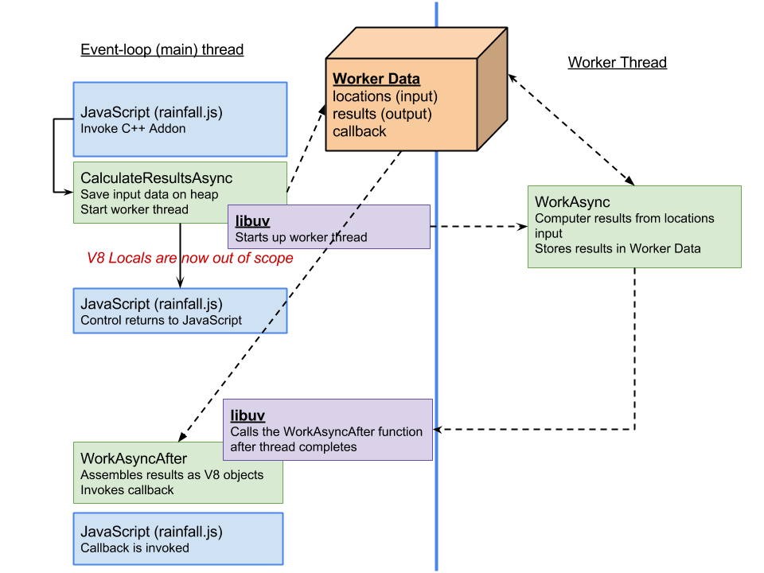

In Chapter 3 we built up a real-world example of a functioning C++ addon - however there is something a bit unsatisfying about it. If you've programmed with Node.js (or even client-side JavaScript), you know that often functions don't return results - they call a callback when they have completed, passing the results in as parameters.
Instead of using Chapter 3's rainfall addon like this:
var results = rainfall.calculate_results(locations);
results.forEach(function(result){
// .. print the result
});
... the experienced JavaScript developer might instead expect to use it like this:
rainfall.calculate_results(locations, function(results){
results.forEach(function(result){
// .. print the result
});
});
Why muddy things up with callbacks? The answer is both simple and complicated. The simple answer is that they allow us to implement a function asynchronously. Behind the scenes, what this really means is that functions that accept callbacks often create worker threads to do their computation. Once the worker threads are started, the function returns and allows the calling code to go about it's business (executing the next line of code). When the worker threads complete, the callback is invoked. It's a complex work flow that often confuses new developers and has given rise to all sorts of alternative ways of working with callbacks - such as promises.
Why are these functions asynchronous? Client side, within the web browser, there is clear need to avoid having JavaScript tying up a lot of time (either waiting for I/O or using the CPU), since while JavaScript is executing the browser cannot render or react to user input. In Node.js, the same philosophy holds - the event loop (implemented by a library called libuv) should never stall on I/O or heavy CPU because, in theory, there is likely other work to be done instead. For example, if using Node.js to implement a web server, tying up the event loop would preclude the web server from serving additional incoming web requests.
Addons are no different in this regard - and in fact they are almost always strong candidates for being implemented asynchronously. Remember, one of the reasons you typically use a C++ addon is to perform a long running CPU task - where C++ will outperform JavaScript. By definition, these long CPU tasks are exactly the sort of thing that should be executed in a background thread!
We are going to "creep up" on the asynchronous model by first learning about the V8 Function API and seeing how we can modify our rainfall addon to use callback functions (synchronously) first. We'll then move to the asynchronous model, while investigating how V8 deals with worker threads and memory management in more detail.
All of the code for this chapter is available in full in the nodecpp-demo repository at https://github.com/freezer333/nodecpp-demo, under the "Rainfall" section.
Chapter 2 described how to use the most common JavaScript data types through the V8 API. We covered primitives and objects in detail - but we didn't go much beyond standard objects and arrays. In JavaScript, functions are objects too - and V8 has a specific Function type that let's us access (and call) JavaScript functions from C++.
The API for calling JavaScript functions from addons was outlined in Chapter 1, and in fact there really isn't much too it! Lets review it quickly, starting with a simple addon function that accepts two arguments - a function from JS and an argument to invoke that function (callback) with:
void CallThisWithThis(
const FunctionCallbackInfo<Value>& args) {
Isolate* isolate = args.GetIsolate();
Local<Function> cb = Local<Function>::Cast(args[0]);
// Create an array with only the message passed in
Local<Value> argv[1] = {args[1]};
cb->Call(Null(isolate), 1, argv);
}
void Init(Local<Object> exports, Local<Object> module) {
NODE_SET_METHOD(exports,
"callthis_withthis", CallThisWithThis);
}
As you can see, a Local<Function> object can be cast from arguments just like any of the other data types we've seen. To execute a function we can utilize the Call method. It requires three arguments - the first is the "this" object that the JavaScript function will be called with. Specifying null tells V8 to use the default value (depends on invocation context). The second and third parameters are for arguments the function will be called with - in this case just one argument, which is what was passed into the addon itself.
The JavaScript to use the addon is pretty straightforward:
const callback = require('./build/Release/callback');
var callme = function(message) {
console.log(message);
}
back.callthis_withthis(callme, "This is an important message");
Now let's adopt this style in our rainfall addon. We'll call this function CalculateResultsSync because while it uses callbacks, it is very much synchronous.
// in node_rainfall.cc
void CalculateResultsSync(
const v8::FunctionCallbackInfo<v8::Value>&args) {
Isolate* isolate = args.GetIsolate();
std::vector<location> locations;
std::vector<rain_result> results;
// extract each location (its a list)
Local<Array> input = Local<Array>::Cast(args[0]);
unsigned int num_locations = input->Length();
for (unsigned int i = 0; i < num_locations; i++) {
locations.push_back(unpack_location(isolate,
Local<Object>::Cast(input->Get(i))));
}
// Build vector of rain_results
results.resize(locations.size());
std::transform(locations.begin(),
locations.end(),
results.begin(),
calc_rain_stats);
// Convert the rain_results into Objects for return
Local<Array> result_list = Array::New(isolate);
for (unsigned int i = 0; i < results.size(); i++ ) {
Local<Object> result = Object::New(isolate);
pack_rain_result(isolate, result, results[i]);
result_list->Set(i, result);
}
Local<Function> callback = Local<Function>::Cast(args[1]);
Handle<Value> argv[] = { result_list };
callback->Call(
isolate->GetCurrentContext()->Global(), 1, argv);
std::cerr << "Returning from C++ now" << std::endl;
args.GetReturnValue().Set(Undefined(isolate));
}
...
void init(Handle <Object> exports, Handle<Object> module) {
...
NODE_SET_METHOD(exports,
"calculate_results_async", CalculateResultsAsync);
}
What do we mean by "synchronous"? On line 31 we invoke the callback sent in from JavaScript.
var print_rain_results = function(results) {
results.forEach(function(result, i){
console.log("Result for Location " + i);
console.log("--------------------------");
console.log("\tLatitude: "
+ locations[i].latitude.toFixed(2));
console.log("\tLongitude: "
+ locations[i].longitude.toFixed(2));
console.log("\tMean Rainfall: "
+ result.mean.toFixed(2) + "cm");
console.log("\tMedian Rainfall: "
+ result.median.toFixed(2) + "cm");
console.log("\tStandard Dev.: "
+ result.standard_deviation.toFixed(2) + "cm");
console.log("\tNumber Samples: "
+ result.n + "\n");
});
}
// Execute the synchronous callback.
rainfall.calculate_results_sync(locations, print_rain_results);
console.log("JavaScript program has completed.")
Notice the cerr output afterwards - when will it execute? It executes AFTER the JavaScript function we are calling completes. The steps are like so:
calculate_results_sync)print_rain_resultsEverything is happening in lock step - while the C++ is executing nothing is happening in JavaScript unless explicitly called from C++. We'd prefer to see something like this:
calculate_results_sync)... after some time..
print_rain_resultsLets do a quick overview of how worker threads work in V8. In our model, there are two threads. The first thread is the event loop thread - its the thread that our JavaScript code is executing in, and its the thread we are still in when we cross over into the C++ addon. This is the thread that we don't want to stall by doing heavy calculations! The second thread (to be created) will be a worker thread managed by libuv, the library that supports asynchronous I/O in Node.
Hopefully you're pretty familiar with threads - the key point here is that each thread has it's own stack - you can't share stack variables between the event loop thread and the worker thread! Threads do share the same heap though - so that's where we are going to put our input and output data, along with state information.
Worker threads are a extremely useful concept, but it comes at a price. JavaScript is implicitly single threaded, and V8 is built around the notion that data within JavaScript is strictly accessible by one thread at a time (even though technically, they are on the heap!). There is sort of a "golden rule" in asynchronous addon development:
you can't access V8 memory outside the event-loop's thread.
This essentially means if you want the asynchronous part of your addon to be able to (1) access input data sent from JavaScript and/or (2) return data to JavaScript then you need to create copies of the input/output data. You might notice however that this is exactly what we are already doing with our unpacking/packing strategy. At the end of this chapter, we'll dive a bit deeper into why copying data is nearly unavoidable when dealing with asynchronous execution.
Our first step is to create yet another C++ function, and register it with our module.
// in node_rainfall.cc
void CalculateResultsAsync(const v8::FunctionCallbackInfo<v8::Value>&args) {
Isolate* isolate = args.GetIsolate();
// we'll start a worker thread to do the job
// and call the callback here...
args.GetReturnValue().Set(Undefined(isolate));
}
...
void init(Handle <Object> exports, Handle<Object> module) {
...
NODE_SET_METHOD(exports, "calculate_results_async", CalculateResultsAsync);
}
The CalculateResultsAsync function is where we'll end up kicking off a worker thread using libuv - but notice what it does right away: it returns! Nothing we fill into this function will be long running, all the real work will be done in the worker thread.
On the C++ side of things, we're going to utilize three functions and a struct to coordinate everything:
Worker Data (struct) - will store plain old C++ input (locations) and output (rain_results) and the callback function that can be invoked when work is completeCalculateResultsAsync - executes in event-loop thread, extracts input and stores it on the heap in worker data.WorkAsync - the function that the worker thread will execute. We'll launch this thread from CalculateResultsAsync using the libuv APIWorkAsyncComplete - the function that libuv will invoke when the worker thread is finished. This function is executed on the event loop thread, not the worker thread. Figure 5 outlines the workflow we'll use.
Lets look at the C++ code, starting with our Work data structure:
struct Work {
uv_work_t request;
Persistent<Function> callback;
std::vector<location> locations;
std::vector<rain_result> results;
};
The vector will store our input and output. The request object is a handle that will actually loop back to the work object - the libuv API accepts pointers of type uv_work_t when starting worker threads. The callback variable is going to store the JavaScript callback. Importantly, its Persistent<>, meaning it will be kept in scope by V8 and not garbage collected. This seems confusing, since the callback will be executed in the event-loop thread, but we need to make it Persistent because when we initially return to JavaScript, all V8 locals are destroyed. A new Local context is created when we are about to call the JavaScript callback after the worker thread completes.
Now lets look at the CalculateResultsAsync function
void CalculateResultsAsync(
const v8::FunctionCallbackInfo<v8::Value>&args) {
Isolate* isolate = args.GetIsolate();
Work * work = new Work();
work->request.data = work;
Notice that the Work struct is created on the heap. Remember, local variables (and V8 Local objects) will be destroyed when this function returns - even though our worker thread will still be active. Here we also set the uv_work_t data pointer to point right back to the work struct so libuv will pass it back to us on the other side.
...
// extract each location (its a list) and
// store it in the work package
// work (and thus, locations) is on the heap,
// accessible in the libuv threads
Local<Array> input = Local<Array>::Cast(args[0]);
unsigned int num_locations = input->Length();
for (unsigned int i = 0; i < num_locations; i++) {
work->locations.push_back(
unpack_location(isolate,
Local<Object>::Cast(input->Get(i)))
);
}
Where earlier we now just went ahead and processed the rainfall data, now we'll kick off a worker thread using libuv. First we store the callback sent to use from JavaScript, and then we're off. Notice as soon as we call uv_queue_work, we return - the worker is executing in its own thread (uv_queue_work returns immediately).
// store the callback from JS in the work
// package so we can invoke it later
Local<Function> callback =
Local<Function>::Cast(args[1]);
work->callback.Reset(isolate, callback);
// kick of the worker thread
uv_queue_work(uv_default_loop(),&work->request,
WorkAsync,WorkAsyncComplete);
args.GetReturnValue().Set(Undefined(isolate));
}
Notice the arguments to uv_queue_work - its the work->request we setup at the top of the function, and two functions we haven't seen yet - the function to start the thread in (WorkAsync) and the function to call when it's complete (WorkAsyncComplete).
At this point, control is passed back to Node (JavaScript). If we had further JavaScript to execute, it would execute now. Basically, from the JavaScript side, our addon is acting the same as any other asynchronous call we typically make (like reading from files).
The worker thread code is actually really simple. We just need to process the data - and since its already extracted out of the V8 objects, its pretty vanilla C++ code. Notice our function has been called with the libuv work request parameter. We set this up above to point to our actual work data.
static void WorkAsync(uv_work_t *req)
{
Work *work = static_cast<Work *>(req->data);
// this is the worker thread, lets build up the results
// allocated results from the heap because we'll need
// to access in the event loop later to send back
work->results.resize(work->locations.size());
std::transform(work->locations.begin(),
work->locations.end(),
work->results.begin(),
calc_rain_stats);
// that wasn't really that long of an operation,
// so lets pretend it took longer...
std::this_thread::sleep_for(chrono::seconds(3));
}
Note - the code above also sleeps for extra effect, since the rainfall data isn't really that large.
Once the worker thread completes, libuv handles calling our WorkAsyncComplete function - passing in the work request object again - so we can use it!
// called by libuv in event loop when async function completes
static void WorkAsyncComplete(uv_work_t *req,int status)
{
Isolate * isolate = Isolate::GetCurrent();
v8::HandleScope handleScope(isolate);
Work *work = static_cast<Work *>(req->data);
// the work has been done, and now we pack the results
// vector into a Local array on the event-thread's stack.
Local<Array> result_list = Array::New(isolate);
for (unsigned int i = 0; i < work->results.size(); i++ ) {
Local<Object> result = Object::New(isolate);
pack_rain_result(isolate, result, work->results[i]);
result_list->Set(i, result);
}
...
The first part of the function above is pretty standard - we get the work data, and we package up the results into V8 objects rather than C++ vectors. Next, we need to invoke the JavaScript callback that was originally passed to the addon. Note, this part is a lot different in Node 0.11 than it was in previous versions of Node because of recent V8 API changes. If you are looking for ways to be a little less dependent on V8, take a look at Chapter 6 covering Nan - which abstracts away a lot of these issues.
// set up return arguments
Handle<Value> argv[] = { Null(isolate), result_list };
// execute the callback
Local<Function>::New(isolate, work->callback)->
Call(isolate->GetCurrentContext()->Global(), 2, argv);
// Free up the persistent function callback
work->callback.Reset();
delete work;
}
Once you call the callback, you're back in JavaScript! The print_rain_results function will be called...
rainfall.calculate_results_async(locations,
function(err, result) {
if (err ) {
console.log(err);
}
else {
print_rain_results(result);
}
});
Note that since we've used the standard call signature for the callback (err, data), you could use a standard promise library like bluebird to promisify your addon call.
As discussed earlier in the chapter, the worker thread API and programming model largely driven by the need to avoid accessing V8 data from our worker threads. In the event loop thread we've constructed C++ objects containing copies of the V8 data sent as input. We've performed calculations in the worker thread using only these C++ objects, and then repackaged them into V8 when we get back to the event loop thread.
For situations where input data and output data is relatively small, this poses absolutely no issue - and these are probably the most common cases. However - what if your async addon is going to do a lot of computation over a large input? What if it generates a huge amount of data? Note that this copying input and output data is being done in the event loop - meaning if it takes a long time, we're blocking the event loop (which we hate doing!).
So we have two problems:
Ideally, we'd prefer a way to directly access V8 data from our worker threads. This is something that the official Node.js and V8 documentation both specifically say we can't do... however I think it's instructive to see why (and documentation covering the "why" is hard to come by!). The remainder of this chapter is about proving it won't work, and the ways we can mitigating the problem of copying within the event loop.
Warning: most of the following contains anti-patterns for asynchronous addons with Node.js.
How does C++ access JavaScript data in the first place? A lot of this is actually covered in Chapter 1 and 2 - but let's briefly review it here. When your Node.js JavaScript code is executing and allocating variables, it's doing so within the V8 JavaScript engine. V8 allocates JavaScript variables within it's own address space inside what we'll call "storage cells". When JavaScript calls into a C++ addon, the C++ code may obtain references to these storage cells by creating handles using the V8 API.
The most common handle type is Local - meaning it's scope is tied specifically to the current handle scope. The scope of a handle is critical, as V8 is charged with implementing garbage collection - and to do this it must keep track of how many references point to given storage cells. These references are normally within JavaScript, but the handles in our C++ addons must be kept track of too.
The most basic form of accessing pre-existing JavaScript variables occurs when we access arguments that have been passed into our C++ addon's when a method is invoked from JavaScript:
As you can see in Figure 6, the Local<Object> handle we create (target) will allow us to access V8 storage cells. Local handles only remain valid while the HandleScope object active when they are created is in scope. The V8 Embedder's Guide is once again the primary place to learn about HandleScope objects - however put simply, they are containers for handles. At a given time, only one HandleScope is active within V8 (or more specifically, a V8 Isolate). Where's the HandleScope in the above example? Good question!
It turns out that Node.js creates a HandleScope right before it calls our addon on the JavaScript code's behalf. This HandleScope is destroyed when the C++ addon function returns. Thus, any Local handle created inside our addon's function only survives until that function returns - meaning Local handles can never be accessed in worker threads when dealing with async addons - the worker threads clearly outlive the initial addon function call!
Persistent handles the answer?Maybe! As the name implies, Persistent handles are not automatically destroyed using HandleScopes - they can hang around indefinitely. Once you've created a persistent handle in your C++ code, V8 will honor that reference (and make sure you can still access the storage cells it points to) until you explicitly release it (you do this by calling the handle's Reset method). At first glance, this appears to be precisely the tool that would allow a long-lived C++ worker thread to access V8 data.
As a first experiment, lets maintain a reference to a JavaScript variable across C++ function calls by setting up a simple (non-threaded) example. Let's build a quick addon that allows JavaScript to pass in an object that the C++ hangs on to. Subsequent calls to the addon will mutate the JavaScript object originally passed into it - and we'll see these changes in JavaScript after the C++ returns.
#include <node.h>
using namespace v8;
// Stays in scope the entire time the addon is loaded.
Persistent<Object> persist;
void Mutate(const FunctionCallbackInfo<Value>& args) {
Isolate * isolate = args.GetIsolate();
Local<Object> target = Local<Object>::New(isolate, persist);
Local<String> key = String::NewFromUtf8(isolate, "x");
// pull the current value of prop x out of the object
double current = target->ToObject()->Get(key)->NumberValue();
// increment prop x by 42
target->Set(key, Number::New(isolate, current + 42));
}
void Setup(const FunctionCallbackInfo<Value>& args) {
Isolate * isolate = args.GetIsolate();
// Save a persistent handle for later use in Mutate
persist.Reset(isolate, args[0]->ToObject());
}
void init(Local<Object> exports) {
NODE_SET_METHOD(exports, "setup", Setup);
NODE_SET_METHOD(exports, "mutate", Mutate);
}
NODE_MODULE(mutate, init)
Notice the two functions exposed by the addon. The first, Setup, creates a (global) Persistent handle to the object passed in from JavaScript. This is a pretty dubious use of global variables within an addon - it's probably a bad idea for non-trivial stuff - but this is just for demonstration. The point is that Persistent<Object> target's scope is not tied to Setup.
The second function exposed by the addon is Mutate, and it simply adds 42 to target's only property - x. Now let's look at the calling Node.js program.
const addon = require('./build/Release/mutate');
var obj = { x: 0 };
// save the target JS object in the addon
addon.setup(obj);
console.log(obj); // should print 0
addon.mutate(obj);
console.log(obj); // should print 42
addon.mutate(obj);
console.log(obj); // should print 84
When we run this program we'll see obj.x is initially 0, then 42, and then 84 when printed out. Living proof we can hang on to V8 within our addon across invocations... we're on to something!
> node mutate.js
{ x: 0 }
{ x: 42 }
{ x: 84 }
Let's simulate a use case where a worker thread spends a long time modifying data iteratively. We'll modify the addon from above such that instead of needing JavaScript to call Mutate, it repeatedly changes target's x value every 500ms in a worker thread.
#include <node.h>
#include <chrono>
#include <thread>
using namespace v8;
// Stays in scope the entire time the addon is loaded.
Persistent<Object> persist;
void mutate(Isolate * isolate) {
while (true) {
std::this_thread::sleep_for(std::chrono::milliseconds(500));
// we need this to create a handle scope, since this
// function is NOT called by Node.js
v8::HandleScope handleScope(isolate);
Local<String> key = String::NewFromUtf8(isolate, "x");
Local<Object> target = Local<Object>::New(isolate, persist);
double current = target->ToObject()->Get(key)->NumberValue();
target->Set(key, Number::New(isolate, current + 42));
}
}
void Start(const FunctionCallbackInfo<Value>& args) {
Isolate * isolate = args.GetIsolate();
persist.Reset(isolate, args[0]->ToObject());
// spawn a new worker thread to modify the target object
std::thread t(mutate, isolate);
t.detach();
}
void init(Local<Object> exports) {
NODE_SET_METHOD(exports, "start", Start);
}
NODE_MODULE(mutate, init)
Note - we're not using libuv or any of the (best) common practice you'd normally see in an async addon; just ordinary C++ threads. Let's update the JavaScript to print out obj each second so we can see the fabulous work our C++ thread is doing.
const addon = require('./build/Release/mutate');
var obj = { x: 0 };
addon.start(obj);
setInterval( () => {
console.log(obj)
}, 1000);
If you've tried this before, you know what's coming next!
> node mutate.js
Segmentation fault: 11
Lovely. It turns out V8 doesn't allow what we're trying to do. Specifically, a single V8 instance (represented by an Isolate) can never be accessed by two threads. That is unless, of course, we use the built in V8 synchronization facilities in the form of v8::Locker. By using v8::Locker, we can prove to the V8 isolate that we are switching between threads - but that we never allow simultaneous access from multiple threads.
Viewing V8 isolate as a shared resource, anyone familiar with thread synchronization can easily understand v8::Locker through the lens of a typical synchronization primitive in C++ - such as a mutex. The v8::Locker object is a lock, and we use RAII to use it. Specifically, the creation of a v8::Locker object (constructor) automatically blocks and waits until no other thread is within the isolate. Destruction of the v8::Locker (when it goes out of scope) automatically releases the lock - allowing other threads to enter.
We have two threads: (1) the Node.js (libuv) event loop and (2) the worker thread. Let's first look at adding locking to the worker:
void mutate(Isolate * isolate) {
while (true) {
std::this_thread::sleep_for(std::chrono::milliseconds(500));
std::cerr << "Worker thread trying to enter isolate" << std::endl;
v8::Locker locker(isolate);
isolate->Enter();
std::cerr << "Worker thread has entered isolate" << std::endl;
// we need this to create local handles, since this
// function is NOT called by Node.js
v8::HandleScope handleScope(isolate);
Local<String> key = String::NewFromUtf8(isolate, "x");
Local<Object> target = Local<Object>::New(isolate, persist);
double current = target->ToObject()->Get(key)->NumberValue();
target->Set(key, Number::New(isolate, current + 42));
// Note, the locker will go out of scope here, so the thread
// will leave the isolate (release the lock)
}
}
At this point, since we haven't added locking anywhere else, you might think this would have very little effect if we run our program now. After all, there is seemingly no contention on the V8 lock, since the the worker is the only thread trying to lock it.
> node mutate.js
Worker thread trying to enter isolate
{ x: 0 }
{ x: 0 }
{ x: 0 }
{ x: 0 }
{ x: 0 }
{ x: 0 }
{ x: 0 }
^C
This is not what we see though... instead, we see that our worker thread never acquires the lock!. This implies our event loop thread owns the isolate. Diving into the Node.js source code, we can see this is correct!. Inside the StartNodeInstance method in src/node.cc (at time of this writing, around line 4096), a Locker object is created about 20 lines or so before beginning to process the main message pumping loop that drives every Node.js program.
// Excerpt from
// https://github.com/nodejs/node/blob/master/src/node.cc#L4096
static void StartNodeInstance(void* arg) {
...
{
Locker locker(isolate);
Isolate::Scope isolate_scope(isolate);
HandleScope handle_scope(isolate);
//... (lines removed for brevity...)
{
SealHandleScope seal(isolate);
bool more;
do {
v8::platform::PumpMessageLoop(default_platform, isolate);
more = uv_run(env->event_loop(), UV_RUN_ONCE);
if (more == false) {
v8::platform::PumpMessageLoop(default_platform, isolate);
EmitBeforeExit(env);
more = uv_loop_alive(env->event_loop());
if (uv_run(env->event_loop(), UV_RUN_NOWAIT) != 0)
more = true;
}
} while (more == true);
}
....
Node.js acquires the isolate lock before beginning the main event loop - and it never relinquishes it. This is where we might begin to realize our goal of accessing V8 data from a worker thread is impractical with Node.js. In other V8 programs, you might very well allow workflows like this, however Node.js specifically disallows multi-threaded access by holding the isolate's lock throughout the entire lifetime of your program.
Unlocker?If you look at the V8 documentation, you will find a counterpart to Locker though - Unlocker. Similar to Locker, it uses an RAII pattern - whenever it is in scope you've effectively unlocked the isolate. Perhaps we could use this in the event loop thread to unlock the isolate...
// Remember - this is called in the event loop thread
void Start(const FunctionCallbackInfo<Value>& args) {
Isolate * isolate = args.GetIsolate();
persist.Reset(isolate, args[0]->ToObject());
// spawn a new worker thread to modify the target object
std::thread t(mutate, isolate);
t.detach();
// This will allow the worker to enter...
isolate->Exit();
v8::Unlocker unlocker(isolate);
}
Running this ends in disaster though - segmentation fault as soon as Start returns - the worker thread never even gets a chance. This really should not have been a surprise. When Start returns, it's relinquished the lock it had on V8 and actually exited the isolate - but this is the thread that actually runs our JavaScript - a clear conflict in logic! The seg fault is a result of Node.js calling into V8 (to return control back to JavaScript) after it's exited the isolate. If we delay the return of Start, we can see that the worker thread is able to access V8 data.
void Start(const FunctionCallbackInfo<Value>& args) {
...
isolate->Exit();
v8::Unlocker unlocker(isolate);
// as soon as we return, Node's going to access V8 which
// will crash the program. So we can stall...
while (1);
}
```
```
> node mutate.js
Worker thread trying to enter isolate
Worker thread has entered isolate
Worker thread trying to enter isolate
Worker thread has entered isolate
...
In theory, we could force JavaScript to call into the addon to periodically release the isolate to allow the worker thread to access it for a while.
void Start(const FunctionCallbackInfo<Value>& args) {
Isolate * isolate = args.GetIsolate();
persist.Reset(isolate, args[0]->ToObject());
// spawn a new worker thread to modify the target object
std::thread t(mutate, isolate);
t.detach();
}
void LetWorkerWork(
const FunctionCallbackInfo<Value> &args) {
Isolate * isolate = args.GetIsolate();
{
isolate->Exit();
v8::Unlocker unlocker(isolate);
// let worker execute for 200 seconds
std::this_thread::sleep_for(std::chrono::seconds(2));
}
//v8::Locker locker(isolate);
isolate->Enter();
}
And here's the JavaScript, graciously calling LetWorkerWork.
const addon = require('./build/Release/mutate');
var obj = { x: 0 };
addon.start(obj);
setInterval( () => {
addon.let_worker_work();
console.log(obj)
}, 1000);
As you can see - this does work - we an access V8 data from a worker thread while the event loop is asleep, with an Unlocker in scope.
> node mutate.js
Worker thread trying to enter isolate
Worker thread has entered isolate
Worker thread trying to enter isolate
Worker thread has entered isolate
Worker thread trying to enter isolate
{ x: 84 }
Worker thread has entered isolate
Worker thread trying to enter isolate
Worker thread has entered isolate
{ x: 168 }
Worker thread trying to enter isolate
Worker thread has entered isolate
Worker thread trying to enter isolate
Worker thread has entered isolate
{ x: 252 }
...
While this makes for a nice thought experiment - it's not practical. The purpose of this entire exercise is to allow a worker thread to asynchronously work with JavaScript data. Further, we wanted to do this without copying lots of data which would slow down (block) the event loop thread. Keeping those goals in mind, the unlocker approach fails miserably - the worker thread can only access V8 data when the event loop is sleeping!
If you've written async addons in C++ already, you surely have used Persistent handles to callbacks. You've gone through the trouble of copying input data into plain old C++ variables, used libuv or Nan's wrappers to queue up a work object to be processed in a worker thread, and then copied the data back to V8 handles and invoked a callback.
It's a complicated workflow - but hopefully the above discussion highlights why its so important. Callback functions (passed in as arguments to our addon when it's invoked) must be held in Persistent handles, since we must access them when our work thread is completed (and well after the initial C++ function returns to JavaScript). Note however that we never invoke that callback from the worker thread. We invoke the callback (accessing the Persistent handle) when our C++ "completion" function is called by libuv - in the event loop thread.
Once you understand the threading rules, I think the elegance of the typical async solution pattern becomes a lot more clear.
Our premise was that we could have a C++ addon that used data from JavaScript as input. Since we now know making a copy is necessary - we come back to the issue of copying a lot of data. If you find yourself in this situation, there may be some very simple ways to mitigate the problem.
First - does your input data really need to originate from JavaScript? If your addon is using a lot of data as input, where is that data actually coming from?
Is it coming from a database? If so, then retrieve it in C++ - not JavaScript!
Is it coming from a file (or an upload)? If so, can you avoid reading it into JavaScript variables and just pass the filename/location into C++?
If your data doesn't sit somewhere already, and JavaScript code is actually building it up incrementally over time (before asking a C++ addon to use it), then another option would be to store the data in the C++ addon directly (as plain old C++ variables). As you build data, instead of creating JavaScript arrays/objects - make calls into the C++ addon to copy data (incrementally) into a C++ data structure that will remain in scope.
There are few really good ways to do this. One is through the ObjectWrap API, which allows you to utilize C++ object directly from JavaScript - which is covered in the next chapter. JavaScript can work with a C++ addon's result data like this too - the worker thread can build up a C++ data structure wrapped in V8 accessors and your JavaScript can pull (copy) data from the structure when ever it needs to. While this approach does not avoid copying data, when used correctly it can avoid holding two copies of large input/output data - it only requires JavaScript to have copies of the parts of the shared data structure it needs "at the moment".
Another method involves building up Node.js Buffer objects and using those structures in your C++ addons. This technique works because Buffer objects allocate data outside of V8 implicitly - so they are indeed accessible from work threads.